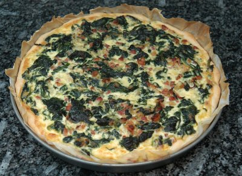

| Zutaten für 4 Personen: | |
| 1 Packung zu 800g | gefrorener Blattspinat |
| 1 Packung | Kuchenteig |
| 50 g | Reibkäse |
| 1/2 | Zwiebel |
| 1 | Knoblauchzehe |
| Pfeffer | |
| 100 g | Speckwürfel |
| 2 | Eier |
| 2 dl | Milch oder Rahm |
| Sardellenfilets zum garnieren | |
Backblech von 28cm Durchmesser einfetten
Teig auswallen und ins Blech geben.
Reibkäse auf dem Teig ausstreuen.
In einer Bratpfanne die fein gehackte Zwiebel und den Knoblauch andünsten.
Den noch gefrorenen Spinat zugeben und dämpfen.
Gut würzen und dann den Spinat auf dem Teig verteilen.
Speckwürfel und Sardellenfilets darüber verteilen.
Die Eier mit der Milch oder dem Rahm verquirlen und darüber verteilen.
Im 180°C heissen Ofen 30 Minuten backen.
Herbert Eigenmann, Code: QIF
Eine fantastische Wähe! Ich denke das liegt vor allem am Reibkäse und am Rahm. RE, 27.8.2007
@LINKBACK_TAG@ @WAKELOCK@